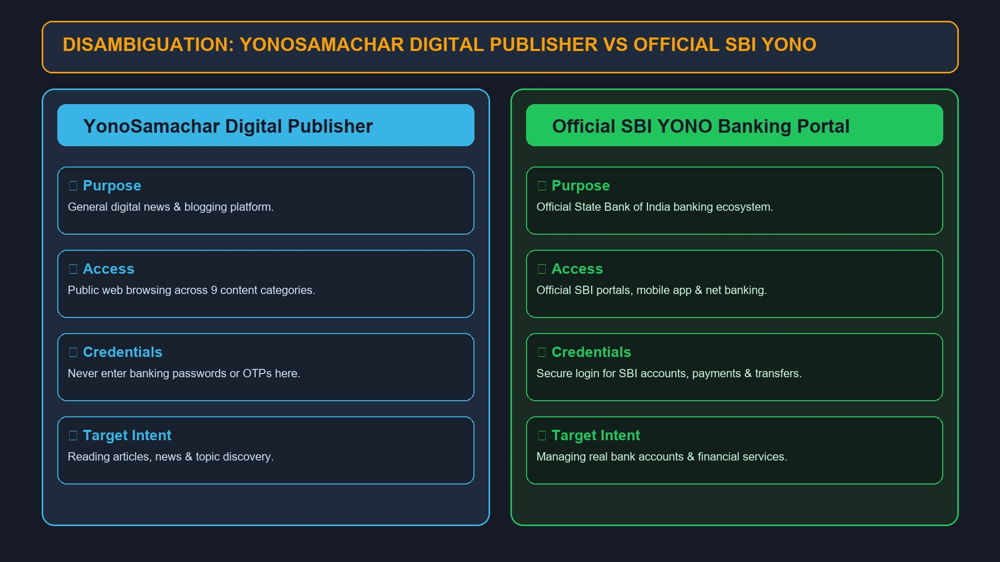
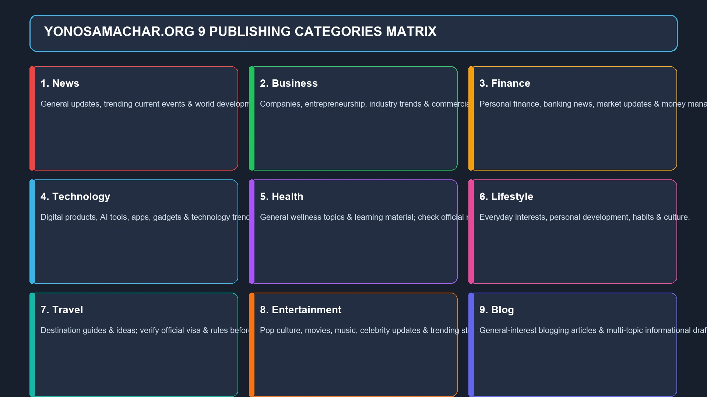
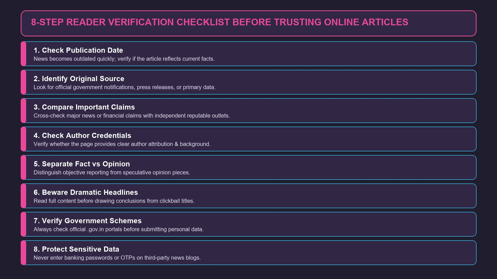

YonoSamachar Com: What Is It, How It Works & What You Should Know
If you have searched for yonosamachar com, you are probably trying to find out what the website is, what kind of information it publishes, and whether it is connected to the YONO banking ecosystem associated with State Bank of India.

If you have searched for yonosamachar com, you are probably trying to find out what the website is, what kind of information it publishes, and whether it is connected to the YONO banking ecosystem associated with State Bank of India.
The name can be confusing at first.
Online search results currently contain references to YonoSamachar, including pages using the .com name and a live .org website that prominently uses the “YonoSamachar Com” branding. The .org site describes itself as a place for news, business updates, finance, technology, entertainment, and other general-interest information.
That means it is important to distinguish the YonoSamachar name from SBI's YONO banking services.
This guide explains what yonosamachar com refers to, the kind of content associated with the name, how readers can evaluate the information they find, why the domain extensions can be confusing, and what to know before treating an article as authoritative.
What Is Yonosamachar Com?
Yonosamachar com is the search phrase commonly used to find or identify the YonoSamachar website.
The name appears in several online contexts, including websites using YonoSamachar, YonoSamachar Com, and different domain extensions. The currently accessible YonoSamachar.org website uses “YonoSamachar Com” as its branding and publishes content across categories such as News, Business, Entertainment, Finance, Health, Lifestyle, Tech, and Travel.
In simple terms, YonoSamachar is presented as a general digital information and news platform rather than a specialist publication dedicated to one subject.
Readers may encounter articles covering:
- News
- Business
- Finance
- Technology
- Entertainment
- Health
- Lifestyle
- Travel
The exact topics available can change as the website's content library develops.
Why Are People Searching for Yonosamachar Com?
There are several reasons the keyword yonosamachar com can appear in search results.
1. People are looking for the website
Someone may have seen the name on social media, another website, or a search result and then typed the domain into Google.
2. The name resembles YONO
The word “Yono” naturally reminds many Indian internet users of YONO by SBI, which can create confusion.
3. Multiple domain extensions appear online
Search results contain references to .com, .org, and other variations. That can make it difficult for a user to determine which page they are actually looking for.
4. The website covers many topics
A broad content strategy creates many different entry points through search engines.
A person searching for a finance topic may encounter one page, while another user may discover a technology or entertainment article.
Is YonoSamachar Connected to SBI YONO?

This is one of the most important questions surrounding yonosamachar com.
The similarity between the words YonoSamachar and YONO can make the two appear related, but a similar name alone does not establish an official connection.
Readers should therefore avoid assuming that YonoSamachar is an official SBI service, SBI banking portal, or official YONO application unless the relationship is confirmed through an official State Bank of India source.
If you are looking for:
- SBI internet banking
- YONO SBI
- SBI account services
- SBI payments
- Official SBI banking information
you should verify that you are using an official SBI property rather than relying on a similarly named third-party website.
This is especially important when a website asks for passwords, banking credentials, card details, OTPs, or other sensitive financial information.
Never enter SBI banking credentials into a website simply because its name contains “Yono.”
What Kind of Content Does YonoSamachar Publish?

The content associated with YonoSamachar is broad.
The current YonoSamachar.org navigation lists Blog, Business, Entertainment, Finance, Health, Lifestyle, News, Tech, and Travel.
That makes the platform different from a narrowly focused financial or technology publication.
News
The News category is intended for readers who want general updates and information.
News articles can cover current events, developments, and trending topics.
Because news changes quickly, publication dates matter. An article that was accurate when published may not describe the latest situation later in the day or week.
Business
Business content can include companies, entrepreneurship, industries, professional topics, and commercial developments.
Business information is particularly useful when it explains a topic clearly rather than simply repeating headlines.
Finance
Finance is another prominent subject associated with YonoSamachar.
Financial articles can cover money-related topics, markets, financial developments, and general personal-finance information.
However, readers should be cautious with any article that could influence a financial decision.
For investments, loans, taxation, banking, insurance, or other significant financial matters, always verify information with official institutions and current regulatory sources.
Technology
Technology content can include digital products, applications, online services, emerging technologies, and broader technology trends.
Technology changes quickly, so readers should check dates and confirm specifications directly with the relevant company when making a purchase or technical decision.
Entertainment
Entertainment content is generally easier to consume casually and may include popular culture, celebrities, movies, music, and trending stories.
Health
Health information requires more care than ordinary lifestyle content.
General health articles can be useful for learning about a subject, but they should not replace a doctor, qualified healthcare professional, or established medical source.
Lifestyle
Lifestyle is a broad category that can cover everyday interests, habits, personal development, and other general subjects.
Travel
Travel information can help readers discover destinations and planning ideas.
But practical details such as visa requirements, entry rules, flight schedules, prices, and opening hours should always be checked with current official sources before making travel arrangements.
How Does YonoSamachar Work?
From a reader's perspective, the model is straightforward.
You visit the website, browse its categories, select an article, and read the information presented there.
A typical content journey looks like this:
Search → Discover article → Read → Explore related content
The website organizes its content by topic, making it easier to move from one subject to another. The current .org site has dedicated categories covering areas from finance and technology to entertainment and travel.
This type of structure is common among modern digital publishers.
YonoSamachar Com and Mobile Reading
Most online news and information consumption now happens across smartphones, tablets, and computers.
A general-interest website therefore needs to be reasonably easy to navigate on smaller screens.
The YonoSamachar.org site presents its content through standard web pages that can be accessed through a browser.
For users, the practical question is less about the device and more about whether the individual page is easy to read.
When reading on mobile, look for:
- Clear headlines
- Readable text
- Easy navigation
- Reasonable page loading
- Minimal unnecessary interruptions
- Clearly identified links
If a page behaves unusually or repeatedly redirects you, close it rather than continuing to interact with suspicious prompts.
Why Domain Extensions Matter
One of the more confusing aspects of yonosamachar com is the appearance of different domain extensions.
A .com domain and a .org domain are technically different web addresses.
They may belong to the same organization, different organizations, or completely unrelated parties.
Search results currently show references to both yonosamachar.com and yonosamachar.org, while third-party articles explicitly discuss differences between the domain versions.
Therefore, never assume that:
YonoSamachar.com = YonoSamachar.org
unless the relationship is clearly established by the site owners.
This is especially important when a user is searching for a specific website.
YonoSamachar Com vs. YonoSamachar Org
Because these names can appear together in search results, it helps to think of the domain itself as part of the identity.
| Point | YonoSamachar.com | YonoSamachar.org |
|---|---|---|
| Domain extension | .com | .org |
| Search visibility | Appears in third-party references | Currently accessible website |
| Branding | YonoSamachar | YonoSamachar Com branding appears on site |
| Content references | News and general information | News, Business, Finance, Tech, Health, Lifestyle, Travel and Entertainment |
| Should they automatically be treated as identical? | No | No |
The important lesson is simple: check the exact domain before assuming you are on the website you intended to visit.
Is YonoSamachar a News Website?
It is reasonable to describe YonoSamachar as a digital news and information platform based on the categories and content displayed on the current site.
However, the term “news website” can mean different things.
A traditional news organization may have:
- Dedicated reporting teams
- Editors
- Correspondents
- Investigative journalists
- Established editorial policies
- Extensive primary reporting
A broad digital publisher can have a very different model.
That is why readers should evaluate the individual article and its sources, not just the website category.
How to Check Whether a YonoSamachar Article Is Reliable

This is perhaps the most useful skill for anyone searching yonosamachar com.
You do not have to automatically believe or reject an article.
Instead, evaluate it.
Check the date
News becomes outdated quickly.
A six-month-old article may not reflect today's situation.
Look for the original source
If an article discusses a government announcement, company statement, court decision, or financial development, look for the primary source.
Compare important claims
For major stories, compare information with at least one or two reputable independent sources.
Check the author
Look at who wrote the article and whether the page provides useful author information.
Separate reporting from opinion
An opinion article should not be treated the same way as a factual news report.
Be cautious with dramatic headlines
A headline is designed to make you click.
Read the article before drawing conclusions.
YonoSamachar and Finance Information
Finance deserves special attention because online financial content can influence real decisions.
You may encounter articles discussing:
- Banking
- Investments
- Markets
- Personal finance
- Business
- Government financial programs
- Loans
- Economic developments
Use such content as a starting point rather than automatically treating it as personalized financial advice.
Before investing money or applying for a financial product, verify:
- Eligibility
- Interest rates
- Fees
- Terms
- Regulatory status
- Deadlines
- Official announcements
Information can change, and an article written for a general audience cannot account for every individual's financial situation.
YonoSamachar and Government Information
Indian readers often search digital publications for government schemes, application information, exam updates, and public announcements.
These subjects require careful verification.
If an article refers to:
- A government scheme
- A subsidy
- A recruitment notice
- An examination
- A result
- A deadline
- A new government rule
check the relevant government website or official notification before taking action.
This is especially important when an article tells you to submit personal information or make a payment.
YonoSamachar and Technology Content
Technology is another area where dates matter.
Suppose an article discusses a smartphone, software product, AI tool, application, or online service.
Its features can change after publication.
Before buying or installing something, verify current details through the manufacturer's or developer's official website.
This is a good habit regardless of which digital publication you use.
Is YonoSamachar Free to Read?
The currently accessible YonoSamachar website provides publicly viewable articles through its website.
Users should still distinguish between reading an article and interacting with third-party links, advertisements, downloads, or external services.
If a page unexpectedly asks for payment or sensitive information, verify the destination before proceeding.
Does YonoSamachar Require Registration?
Ordinary article browsing does not appear to require visitors to create an account on the publicly accessible pages.
However, websites can change their features and policies.
If a particular service asks for registration, review what information is being requested and why it is needed.
Is YonoSamachar Safe to Use?
The safest answer is to distinguish reading public information from sharing sensitive information.
Reading an ordinary webpage is very different from entering banking credentials or uploading confidential documents.
For basic browsing, use normal web-safety practices.
For example:
- Check the domain carefully.
- Avoid suspicious pop-ups.
- Don't enter banking passwords.
- Never share OTPs.
- Don't download unknown files.
- Be cautious with shortened links.
- Verify external websites before entering personal information.
A third-party website should never be assumed to be an official banking or government portal solely because its branding sounds familiar.
What About the Trust Score of YonoSamachar.org?
Some third-party website-checking services have raised cautionary signals about yonosamachar.org, including observations about domain age, ownership privacy, and site reputation. One such service currently displays a low trust assessment but also notes positive technical signals such as a valid SSL certificate.
These automated trust scores should not be treated as definitive proof that a website is fraudulent.
They are indicators, not a final verdict.
A better approach is to combine:
- Domain verification
- Website transparency
- Content quality
- Author information
- External reputation
- Security practices
- User experience
- Independent verification
That produces a more useful assessment than relying on a single numerical score.
Why Some YonoSamachar Articles May Look Similar to Other Websites
Broad digital publishing sites often cover topics that are already being discussed elsewhere.
As a result, readers may find several websites discussing the same:
- Government announcement
- Product launch
- Business development
- Entertainment story
- Technology update
- Financial event
This does not automatically mean an article is copied.
The important question is whether the page adds useful context and whether factual claims can be verified.
For important stories, go back to the original announcement whenever possible.
What Makes a Good YonoSamachar Article?
From a reader's perspective, useful content should do more than repeat a headline.
A strong article should:
- Clearly explain the subject.
- Provide relevant context.
- Use understandable language.
- Distinguish facts from opinions.
- Give readers enough information to understand what happened.
- Point toward authoritative sources when necessary.
- Avoid misleading claims.
- Make the publication date clear.
These principles apply to YonoSamachar and every other digital information website.
How YonoSamachar Fits Into Modern Online News
The rise of websites such as YonoSamachar reflects a larger change in how people consume information.
Readers no longer rely on one newspaper or television channel.
Instead, information comes from:
- Search engines
- News websites
- Social networks
- Video platforms
- Messaging applications
- Blogs
- Newsletters
- Official websites
This creates convenience, but it also creates a new responsibility.
Readers have to become better at judging information.
The ability to verify a claim is often more valuable than simply finding a headline quickly.
YonoSamachar Com: Advantages for Readers
There are several potential advantages to a broad digital content platform.
Wide topic coverage
Readers can explore several subjects from one website.
Easy discovery
Search engines can make individual articles easy to discover.
General-interest content
You do not need to be a specialist to understand many of the topics.
Multiple categories
Finance, technology, business, health, lifestyle, travel, and entertainment provide different entry points.
Quick information
Short informational articles can be useful when someone needs a basic overview before doing deeper research.
Limitations Readers Should Consider
A broad content website also has natural limitations.
Not every topic has the same level of authority
A site covering eight or nine categories cannot automatically be treated as a specialist authority in each one.
Information can become outdated
This is especially true for news, finance, technology, travel, and government announcements.
Domain confusion
Different domain extensions can create uncertainty about which website a searcher intended to visit.
Secondary reporting
Some stories may be based on information already published elsewhere. When the subject matters, readers should look for the original source.
Automated trust tools are imperfect
Website reputation services can be useful signals but should not be treated as definitive judgments.
YonoSamachar Com: Quick Facts
| Question | Answer |
|---|---|
| What is YonoSamachar? | A digital information/news brand found across online search results |
| Main content areas | News, Business, Finance, Tech, Health, Lifestyle, Travel and Entertainment |
| Is it the same as SBI YONO? | Do not assume an affiliation based on the name alone |
| Is .com the same as .org? | Not automatically |
| Can readers browse articles? | Yes, publicly accessible YonoSamachar pages are available |
| Should important claims be verified? | Yes |
| Should banking credentials be entered? | Only on a verified official banking domain |
| Are all articles equally authoritative? | No; evaluate the individual article and source |
The category information reflects the currently accessible YonoSamachar.org site.
Frequently Asked Questions About Yonosamachar Com
Yonosamachar com is the commonly searched name for the YonoSamachar online publishing/news presence. Search results currently contain references to both YonoSamachar.com and YonoSamachar.org, so users should check the exact domain they are visiting.
The similarity in names does not by itself establish an official SBI relationship. If you need SBI banking services, verify that you are using an official SBI website or application.
The currently accessible YonoSamachar.org site has categories including News, Business, Finance, Tech, Health, Lifestyle, Travel, Entertainment, and Blog.
It presents itself as a digital information and news platform with a broad range of categories. However, readers should evaluate individual articles and sources rather than assuming every page has the same editorial depth.
Publicly accessible articles can be viewed through the website without an obvious requirement for a paid subscription.
Use normal web-safety precautions. In particular, do not enter banking credentials, OTPs, card information, or other sensitive details unless you have independently confirmed that you are on the appropriate official service.
Use financial articles for general information and topic discovery, then verify important claims through banks, regulators, government sources, or qualified financial professionals.
Different domain extensions represent different web addresses. They may or may not have the same ownership or purpose, so users should not assume they are identical simply because the names are similar.
Yes. Technology is one of the categories currently displayed on the YonoSamachar.org website.
Yes. Finance is also listed as a current category.
Check the article date, look for the original source, compare the claim with another reputable publication, and consult the relevant official organization when the subject involves government, finance, law, health, or other high-stakes information.
Final Verdict: What Is Yonosamachar Com?
The simplest answer is that yonosamachar com is a search term associated with the YonoSamachar digital publishing/news presence, which covers a wide range of general-interest subjects.
The currently accessible YonoSamachar.org website uses the YonoSamachar Com branding and organizes content into areas including News, Business, Finance, Tech, Health, Lifestyle, Travel, Entertainment, and Blog.
The biggest point to remember is the distinction between YonoSamachar and SBI's YONO services. A similar name does not automatically mean an official relationship.
There is also a genuine domain-identity issue. Search results contain references to .com and .org versions, and third-party coverage has noted differences between them.
For casual reading, the platform can be treated as a general online information source. For anything important—especially financial, medical, legal, government, or banking information—use it as a starting point and verify the claim through an authoritative source.
In short, when you search “yonosamachar com,” don't focus only on the name. Check the exact domain, understand what type of information you are reading, and verify important claims before acting on them.
For more such useful information read our site crackstube.blog
Enjoyed this Technology guide?
Explore more Tech articles or submit your own guest contribution on CracksTube.